Answerly AI puts a set of tools right on your Canvas quiz page. This guide walks through every one of them. For each tool you will see what it does, how to turn it on, and a picture of what it looks like. Every picture is the real extension running on a sample quiz.
What's in this guide
1. Getting started
Answerly AI is a browser extension for Chrome and Firefox on a computer. It works on Windows, Mac and Chromebooks. It does not run on phones or tablets.
- Install itAdd Answerly AI from the Chrome Web Store or Firefox Add-ons. Then pin it to your toolbar so it is always one click away. In Chrome, click the puzzle piece icon and then the pin next to Answerly AI.
- Get your codeA plan is $12.99 a month. After you pay, your activation code arrives by email. It looks like
ANS-XXXX-XXXX-XXXX. If you do not see it, check your spam folder. - ActivateClick the Answerly icon, paste your code, and click Activate.
- Open a Canvas quizThe tools work on Canvas quiz and assignment pages. On any other page, the popup tells you to go to one first.
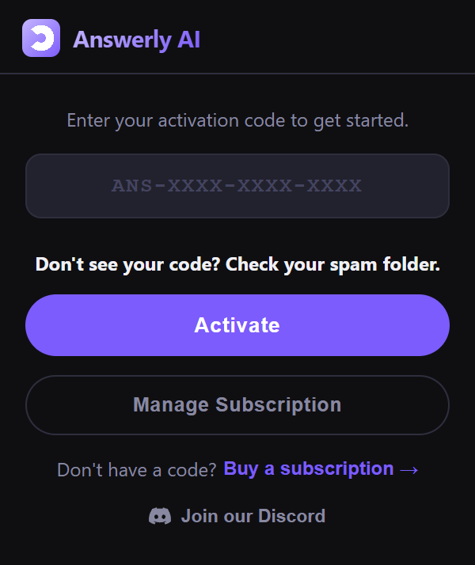
Your plan renews each month, and each renewal emails you a new code. Paste it in when it arrives. To cancel, click Manage Subscription in the popup.
2. The popup at a glance
Click the Answerly icon in your toolbar to open the popup. This is where you turn every tool on and off.
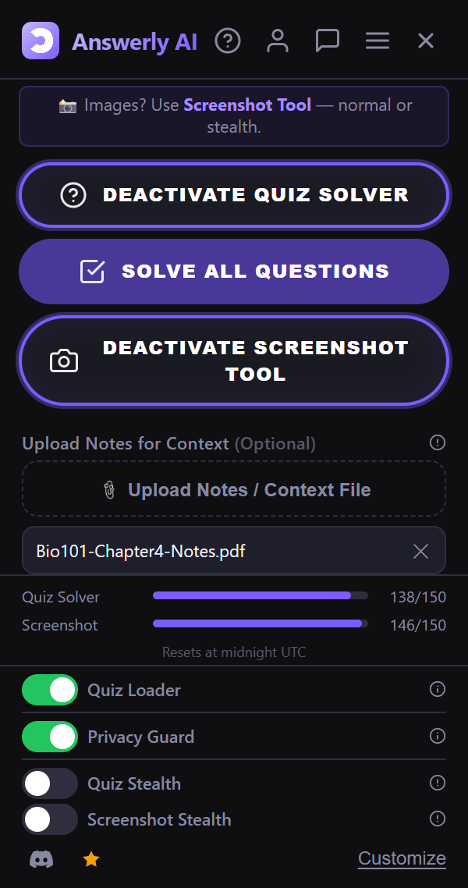
From top to bottom, here is what each part does:
- Top icons. The ? opens Things to Remember, a short list of answers to common questions. The person icon shows your code, the date your plan runs until, and Log out. The chat bubble is Report a Bug. The menu has the tutorial video, Buy or Renew, Manage Subscription, and the support email.
- The tip bar. A reminder that questions with pictures need the Screenshot Tool.
- Three big buttons. Quiz Solver, Solve All Questions, and Screenshot Tool. Click one to turn it on. Click it again to turn it off.
- Upload Notes for Context. Add your class notes so answers match your course.
- Usage bars. How many solves you have left today for each tool.
- Switches. Quiz Loader, Privacy Guard, Quiz Stealth, and Screenshot Stealth.
- Bottom row. Discord, a star to leave a review, and the Customize page.
Set up first. Turn on the tools you want before you start the quiz. Your choices stay on as you move from page to page, so you do not have to open the popup again in the middle of a quiz.
3. Quiz Solver
The Quiz Solver reads the question on your screen and gives you a hint, then the answer. It reads the question straight from the page, so there is nothing to copy and paste.
How to use it
- Turn it onOpen the popup and click Activate Quiz Solver.
- Find the purple buttonA small purple ? button appears at the top of every question.
- Click it for a hintA card opens under the question with a hint. Try to answer it yourself first.
- Click Show AnswerThe answer appears in the card. Click Hide Answer to tuck it away again.
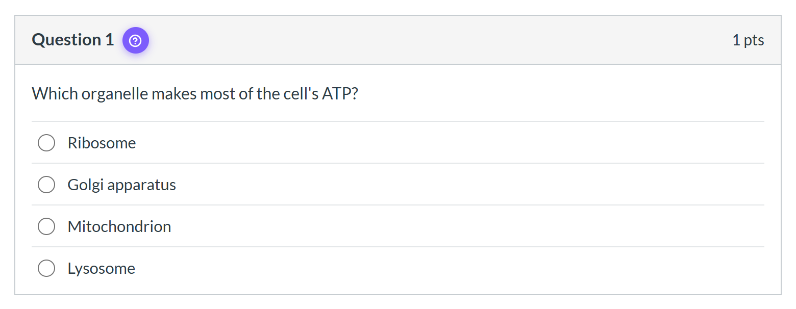
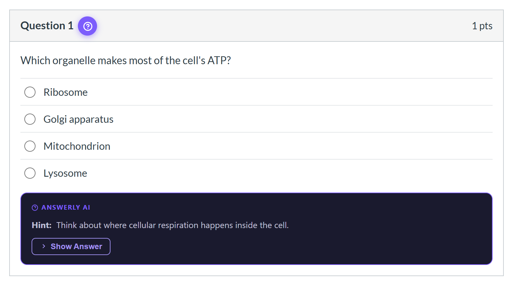
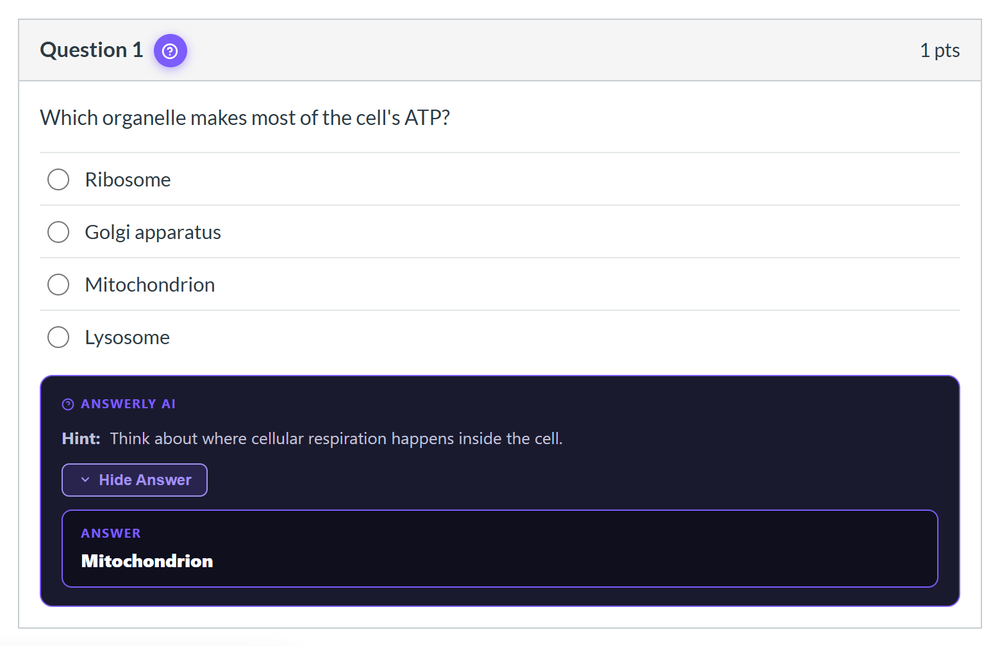
In this normal mode, you click the answer yourself on multiple choice and select all questions. For fill in the blank boxes, dropdowns and matching, Answerly also types or picks the answer for you.
Question types it handles
Multiple choice, select all that apply, true or false, fill in the blank (including questions with several blanks), matching, dropdowns, and number answers. It works on both Classic Quizzes and New Quizzes.
When a question's content is inside a picture, there is no text for the Quiz Solver to read. Instead of guessing, it tells you to use the Screenshot Tool.
4. Solve All Questions
Solve All Questions answers every question on the page in one go. It ticks the boxes, fills the blanks, and sets the dropdowns for you.
- Turn on the Quiz Solver firstThe Solve All button stays grey until the Quiz Solver is on.
- Click Solve All QuestionsThe answers fill in one after another, a moment apart.
- Look it overCheck the answers before you submit.
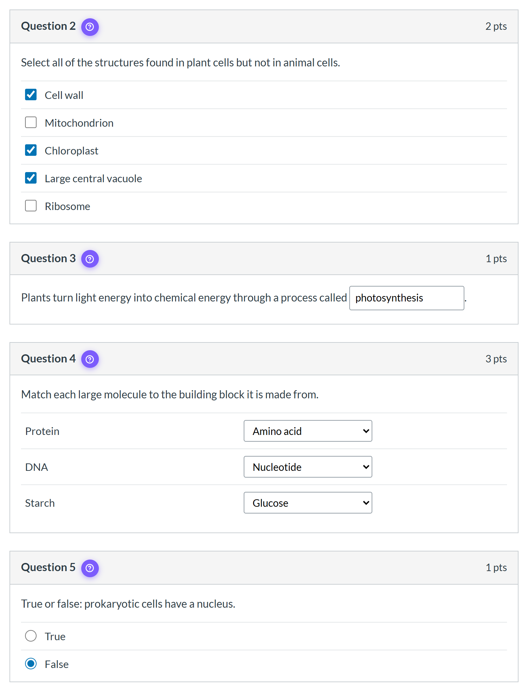
A few things to know:
- It skips questions with pictures. The popup then tells you how many it skipped, so you can do those with the Screenshot Tool.
- It only sees what is on the page. If your quiz shows one question at a time, it answers the one in front of you. Go to the next question and click it again.
- It leaves essays alone. Long written answers are not part of Solve All.
5. Screenshot Tool
Some questions cannot be read as text. Graphs, diagrams, pictures, chemical structures, and question types the Quiz Solver does not know all fall into this group. The Screenshot Tool handles them. You draw a box around the question, and the AI reads the picture.
- Turn it onClick Activate Screenshot Tool. A small Answerly AI Screenshot panel appears in the corner of the page.
- Click Select AreaThe page freezes for a moment as a picture.
- Drag a box around the questionInclude the question, any graph or picture, and the answer choices. The box shows its size as you drag. Press Esc to cancel.
- Add more if you need toIf a question is too long for one box, you can capture up to 3 areas for the same question.
- Click SendThe answer comes back in bold, with a short reason under it.
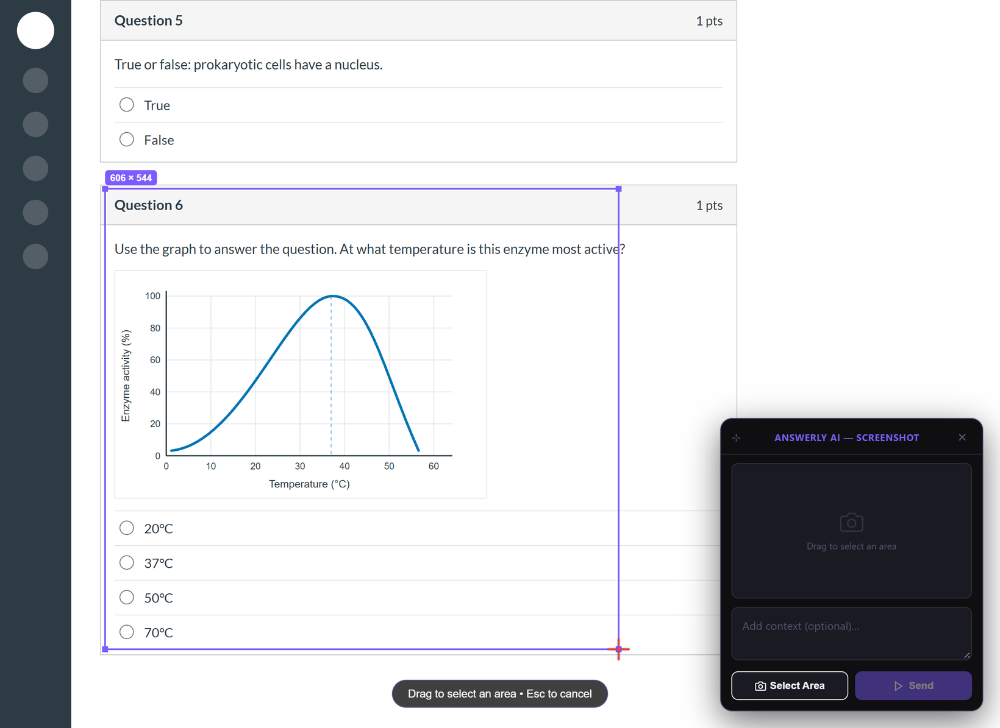
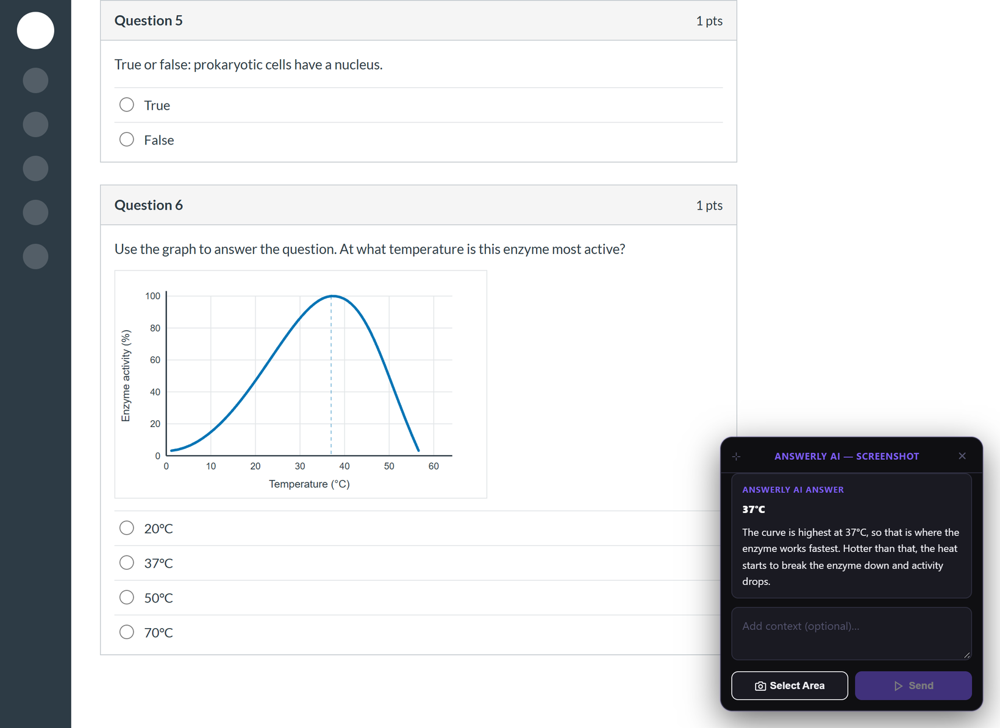
The context box
The box under the picture is optional. Use it to say which question you mean when your box caught more than one, like "question 4" or "the bottom one." When only one question is in the box, leave it empty.
The quick shortcut
Press Ctrl+Shift+X to show or hide the Screenshot Tool on any website, without opening the popup. To change the key, go to chrome://extensions/shortcuts in Chrome. In Firefox, open Add-ons, click the gear icon, and choose Manage Extension Shortcuts.
6. Stealth modes
The two stealth switches hide Answerly's buttons and panels, so the page looks like a normal quiz. They change how things look, not what Answerly can answer.
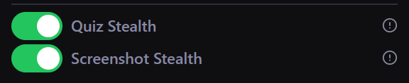
Quiz Stealth
This needs the Quiz Solver to be on. The purple ? button turns invisible, but it is still there at the top of the question. Click that spot and Answerly finds the answer and selects it for you. No card opens.
Not sure where the spot is? Move your mouse over the top of the question. A small label that says Auto-Select appears when you are on it.
Screenshot Stealth
This needs the Screenshot Tool to be on. The panel in the corner goes away, and each question gets an invisible camera button right next to the ? spot. Hover over it to see the Screenshot label. Click it, drag a box around the question, and the answer is filled in for you.
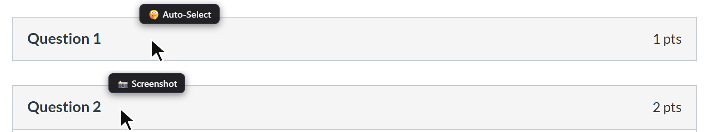
Good to know
- Written answers get typed in. In either stealth mode, essay and short written answers are typed into the box for you. Read the answer and put it in your own words before you submit.
- Drag and drop is on you. On New Quizzes, Categorization, Ordering, and Hot Spot questions cannot be filled in for you. Answerly shows the answer in a small note, and you place it yourself.
- Picture questions get a note. If you click the Quiz Stealth spot on a question with a picture, a dim note tells you to use the Screenshot Tool. It fades on its own after about 5 seconds, or you can click X to close it.
7. Keybinds
Would you rather not click at all? Set a key on the Customize page, and press it instead.
- Open CustomizeClick Customize at the bottom of the popup.
- Switch them onUnder Stealth Keybind, turn on Solve with a key, Screenshot with a key, or both.
- Pick your keysClick the Key button and press the key you want. Use a different key for each one.
- SaveClick Save Changes at the bottom of the page.
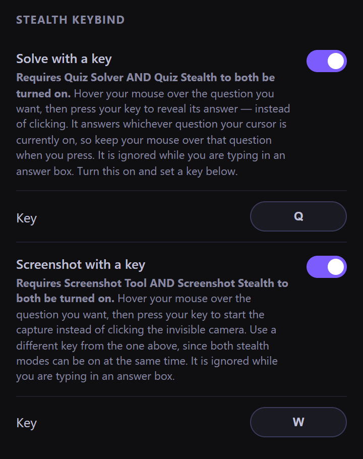
To use a key, hover over a question and press it. The key works on the question under your mouse pointer, not the whole page. Solve with a key needs Quiz Solver and Quiz Stealth on. Screenshot with a key needs the Screenshot Tool and Screenshot Stealth on. Keys are ignored while you type in an answer box, so you can still type normally.
8. Upload Notes for Context
If your quiz comes from one textbook, lecture, or reading, upload it. The AI then uses it when it answers, so the answers match the way your class says things.
- Click Upload Notes / Context FileIt is right under the three big buttons in the popup.
- Pick your fileA PDF, an image (PNG or JPG), or a .txt file, up to 7 MB.
- That is itThe file name shows under the button. It stays active until you click the X to remove it.
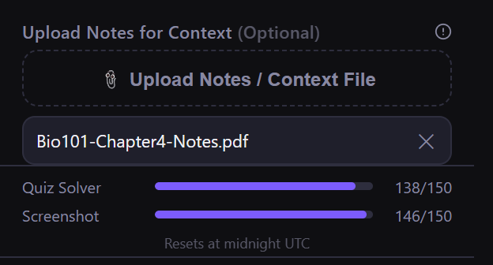
9. Quiz Loader
Retaking a quiz? Quiz Loader remembers the answers you entered and puts them back for you, so you do not have to type every one again.
- It only fills boxes you have left empty. It never changes an answer you already gave on this attempt.
- It works on both Classic Quizzes and New Quizzes.
- It remembers your last 40 quizzes for 60 days.
Turn it on with the Quiz Loader switch in the popup.
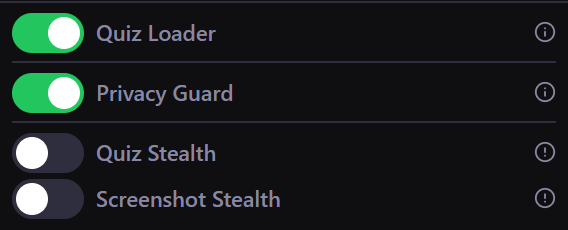
10. Privacy Guard
Privacy Guard blocks activity logging while you work on quizzes and assignments. That covers tab switch detection, page view tracking, and quiz event logging. Unlike the other tools, it is not limited to Canvas. It also works on Moodle, Blackboard, and other learning platforms.
Turn it on before you open the quiz. For a plain look at what Canvas records in the first place, read what your instructor can see in a quiz log.
11. Customize
The Customize page changes how everything looks. Open it from the Customize link at the bottom of the popup.
- Presets. One click themes: Default, Ghost (Invisible), Midnight, Matrix, and Blend In. Blend In uses Canvas's own greys, so the card looks like part of the page.
- Colors. Set the logo and button color, card background, border, buttons, answer box, answer text, and hint text.
- Card Opacity. Slide it from fully visible all the way down to invisible.
- Screenshot Drag Box. New in version 1.3.50. Pick the color of the box and the crosshair, and how see through they are. It applies to every screenshot mode.
- Stealth Keybind. The keys from section 7.
- Preview. See your changes before you save them.
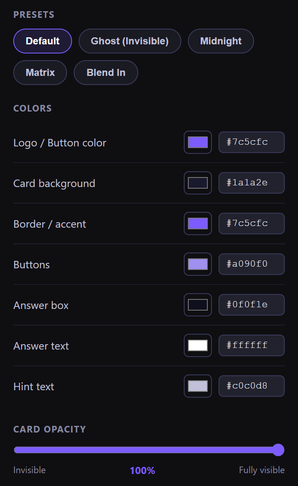
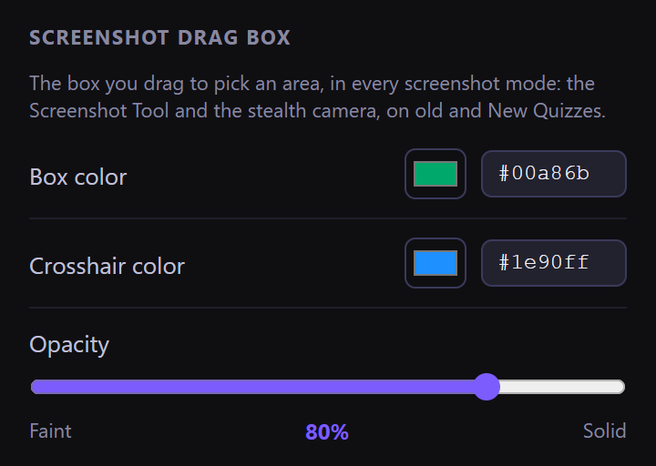
When you are done, click Save Changes at the bottom, or nothing is kept. If a quiz is already open, reload it to see your new look.
12. Classic and New Quizzes
Canvas has two quiz engines, Classic Quizzes and New Quizzes. Answerly works on both, with the same tools, so you never have to pick one. On New Quizzes, the ? button sits right after the point value. To learn how the two engines differ, see New Quizzes vs Classic Quizzes.
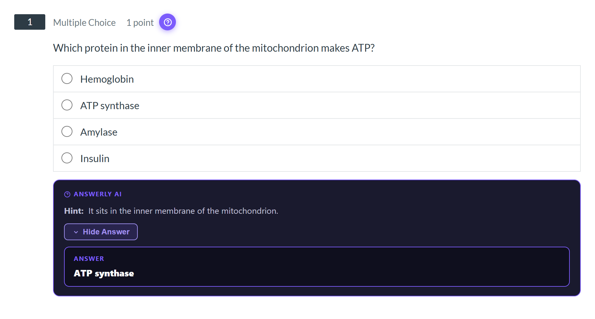
13. Daily limits
Each plan includes 200 Quiz Solver solves and 200 Screenshot solves per day. They are counted separately, so using up one still leaves the other. Both reset at midnight UTC. The bars in the popup show how many you have left.
14. Getting help
- Things to Remember. Click the ? at the top of the popup for quick answers to the most common questions.
- Report a Bug. The chat bubble opens a private chat with the developer. Only you can see it.
- Tutorial video. In the popup menu, under Tutorial.
- Discord. The Discord icon at the bottom of the popup.
- Email. AnswerlyAISupport@gmail.com.
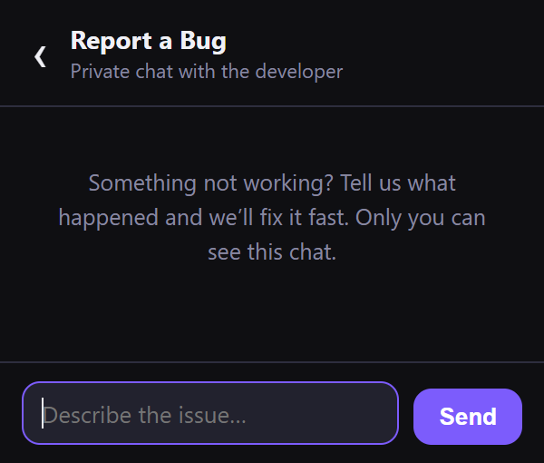
15. Quick tips
- Turn on your tools before the quiz starts.
- Use the Screenshot Tool for anything with a picture, graph, or diagram.
- Check diagram answers yourself. Questions that ask you to name the exact part a line points to are the hardest type, and Answerly sometimes picks the part right next to it.
- Upload your notes for quizzes that come from one book or lecture.
- If the buttons do not show up, reload the quiz page. Then check that you are signed in and that the tools you want are on.
- Look in your spam folder for your renewal code each month.
Use it to learn. Try each question before you look, then compare. The hint and the reason under each answer show you what you missed. How you use Answerly on graded work is up to your school's rules, so know them.
Ready to try it on your next quiz?
Every tool in this guide comes with one plan: $12.99 a month.
Get Answerly AI →Frequently asked questions
Does Answerly AI work on New Quizzes?
Yes. It works on both Canvas quiz engines, Classic Quizzes and New Quizzes, with the same tools on each.
Does Answerly AI pick the answer for me?
In normal mode the Quiz Solver shows a hint and then the answer, and you click the option yourself. Fill in the blank boxes, dropdowns, and matching are filled in for you. Solve All Questions and Quiz Stealth select the answers for you.
Can Answerly AI answer questions with graphs or pictures?
Yes, with the Screenshot Tool. Drag a box around the question and the AI reads the picture, including graphs, diagrams, and charts.
How many questions can I solve per day?
200 Quiz Solver solves and 200 Screenshot solves per day, counted separately. Both reset at midnight UTC, and the popup shows how many you have left.
Does Answerly AI work on my phone?
No. It is a browser extension for Chrome and Firefox on a computer. It works on Windows, Mac, and Chromebooks, but not on phones or tablets.
How do I change the color of the screenshot drag box?
Open Customize from the bottom of the popup. In the Screenshot Drag Box section, pick a box color, a crosshair color, and an opacity, then click Save Changes.